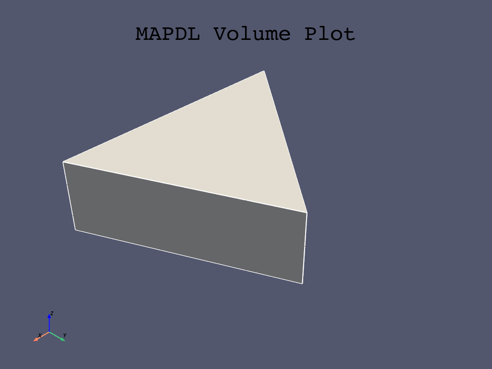
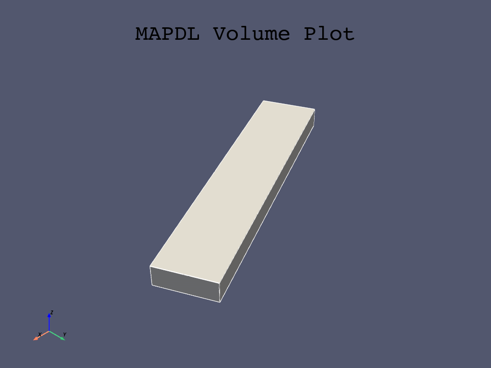
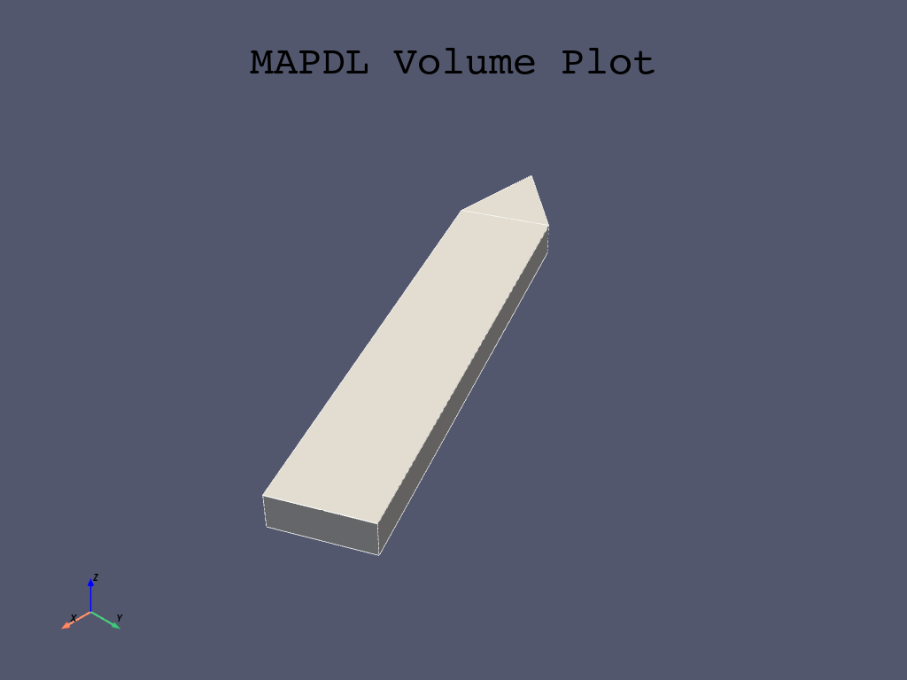
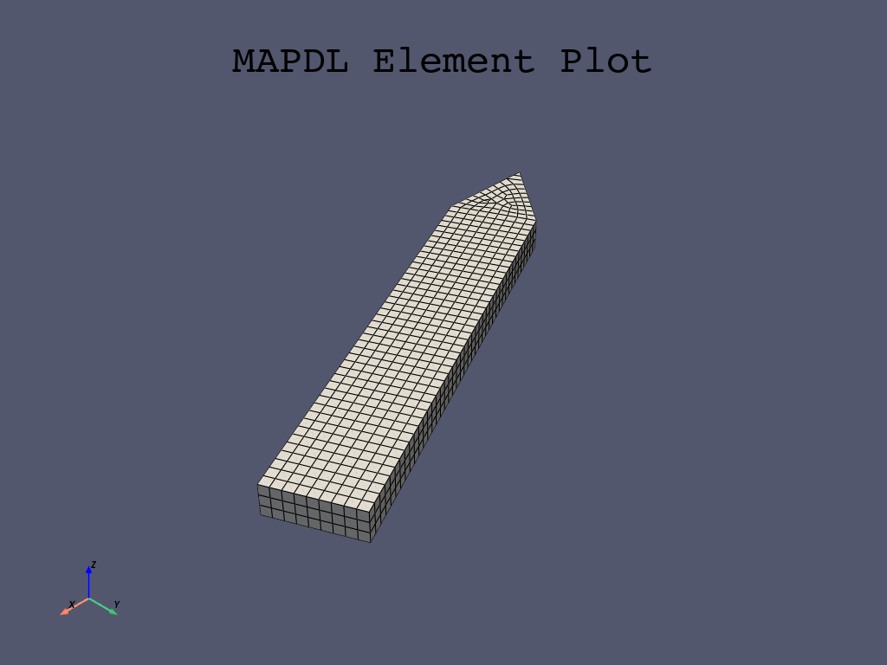

Note
Go to the end to download the full example code
Cyclic Analysis#
This example creates a bladed disc using parametric geometry of a cyclic sector and then runs a modal analysis on that cyclic sector. We then post-process the results using the legacy MAPDL reader and finally generate another cyclic model using our parametric modeler.
Our first task is to create a simple cyclic model with 7 sectors.

First, start MAPDL as a service.
# sphinx_gallery_thumbnail_number = 3
import numpy as np
import pyvista as pv
from ansys.mapdl.core import launch_mapdl
mapdl = launch_mapdl()
Create the Cyclic Sector#
Create a single “sector” of our cyclic model.
def gen_sector(mapdl, sectors):
"""Generate a single sector within MAPDL."""
# thickness
thickness = 0.003 # meters
arc_end = 2 * np.pi / sectors
arc_cent = arc_end / 2
# radius
rad = 0.01 # M
arc = pv.CircularArc(
[rad, 0, 0],
[np.cos(arc_end) * rad, np.sin(arc_end) * rad, 0],
[0, 0, 0],
)
# interior circle
kp_begin = [rad, 0, 0]
kp_end = [np.cos(arc_end) * rad, np.sin(arc_end) * rad, 0]
kp_center = [0, 0, 0]
# exterior circle in (M)
out_rad = 5.2e-2
# solve for angle to get same arc.length at the end
cent_ang = arc.length / out_rad / 2
# interior circle
kp_beg_outer = [
np.cos(arc_cent - cent_ang) * out_rad,
np.sin(arc_cent - cent_ang) * out_rad,
0,
]
kp_end_outer = [
np.cos(arc_cent + cent_ang) * out_rad,
np.sin(arc_cent + cent_ang) * out_rad,
0,
]
mapdl.prep7()
mapdl.k(0, *kp_center)
mapdl.k(0, *kp_begin)
mapdl.k(0, *kp_end)
mapdl.k(0, *kp_beg_outer)
mapdl.k(0, *kp_end_outer)
# inner arc
mapdl.l(1, 2) # left line
mapdl.l(1, 3) # right line
lnum_inter = mapdl.l(2, 3) # internal line
mapdl.al("all")
# outer "blade"
lnum = [lnum_inter, mapdl.l(4, 5), mapdl.l(2, 4), mapdl.l(3, 5)]
mapdl.al(*lnum)
# extrude the model in the Z direction by ``thickness``
mapdl.vext("all", dz=thickness)
# generate a single sector of a 7 sector model
sectors = 7
gen_sector(mapdl, sectors)
# Volume plot
mapdl.vplot()
- 
- 
- 
Make the Model Cyclic#
Make the model cyclic by running Mapdl.cyclic()
Note how the number of sectors matches
output = mapdl.cyclic()
print(f"Expected Sectors: {sectors}")
print(output)
Expected Sectors: 7
USE EXISTING MODEL FOR CYCLIC SYMMETRY
******************************************************
****** COMPUTED QUANTITIES ***************************
******************************************************
* NUMBER OF SECTORS = 7 *
* SECTOR ANGLE = 51.429 *
* CYCLIC COORDINATE SYSTEM = 1 *
* EDGE COMPONENTS CONTAIN AREAS *
* LOW EDGE COMPONENT = CYCLIC_M01L MATCHED *
* HIGH EDGE COMPONENT = CYCLIC_M01H *
******************************************************
Generate the mesh#
Generate the finite element mesh using quadritic hexahedrals, SOLID186.
Apply Material Properties#
# Define a material (nominal steel in SI)
mapdl.mp("EX", 1, 210e9) # Elastic moduli in Pa (kg/(m*s**2))
mapdl.mp("DENS", 1, 7800) # Density in kg/m3
mapdl.mp("NUXY", 1, 0.3) # Poisson's Ratio
# apply it to all elements
mapdl.emodif("ALL", "MAT", 1)
MODIFY ALL SELECTED ELEMENTS TO HAVE MAT = 1
Run the Modal Analysis#
Let’s get the first 10 modes. Note that this will actually compute
(sectors/2)*nmode based on the cyclic boundary conditions.
output = mapdl.modal_analysis(nmode=10, freqb=1)
print(output)
*** NOTE *** CP = 0.000 TIME= 00:00:00
There is no title defined for this analysis.
*** WARNING *** CP = 0.000 TIME= 00:00:00
No constraints have been defined using the D command.
GENERATE CYCLIC SYMMETRY CONSTRAINT EQUATIONS
*** WARNING *** CP = 0.000 TIME= 00:00:00
There is no high edge node in a position to match low edge node 2545
(location error = 4.55E-04, maximum for all nodes). Cyclic symmetry
constraint equations will be generated between the sector edges using
a mapping procedure similar to the CEINTF command. This may reduce
solution accuracy, especially near the sector edges.
NUMBER OF CONSTRAINT EQUATIONS GENERATED= 363
(USING THE UNMATCHED NODES ALGORITHM)
***** MAPDL SOLVE COMMAND *****
*** SELECTION OF ELEMENT TECHNOLOGIES FOR APPLICABLE ELEMENTS ***
---GIVE SUGGESTIONS ONLY---
ELEMENT TYPE 1 IS SOLID186. KEYOPT(2) IS ALREADY SET AS SUGGESTED.
*****MAPDL VERIFICATION RUN ONLY*****
DO NOT USE RESULTS FOR PRODUCTION
S O L U T I O N O P T I O N S
PROBLEM DIMENSIONALITY. . . . . . . . . . . . .3-D
CYCLIC SYMMETRY SECTOR ANGLE. . . . . . . . . . 51.429 DEGREES
DEGREES OF FREEDOM. . . . . . UX UY UZ
ANALYSIS TYPE . . . . . . . . . . . . . . . . .MODAL
EXTRACTION METHOD. . . . . . . . . . . . . .BLOCK LANCZOS
NUMBER OF MODES TO EXTRACT. . . . . . . . . . . 10
USE CYCLIC MODES IN SUBSEQUENT MSUP ANALYSIS. .YES
SHIFT POINT . . . . . . . . . . . . . . . . . . 1.0000
GLOBALLY ASSEMBLED MATRIX . . . . . . . . . . .SYMMETRIC
NUMBER OF MODES TO EXPAND . . . . . . . . . . . 10
ELEMENT RESULTS CALCULATION . . . . . . . . . .OFF
*** NOTE *** CP = 0.000 TIME= 00:00:00
The conditions for direct assembly have been met. No .emat or .erot
files will be produced.
D I S T R I B U T E D D O M A I N D E C O M P O S E R
...Number of elements: 1329
...Number of nodes: 7279
...Decompose to 0 CPU domains
...Element load balance ratio = 0.000
L O A D S T E P O P T I O N S
LOAD STEP NUMBER. . . . . . . . . . . . . . . . 1
CYCLIC SYMMETRY HARMONIC INDEX. . . . . . . . . 0
THERMAL STRAINS INCLUDED IN THE LOAD VECTOR . . YES
PRINT OUTPUT CONTROLS . . . . . . . . . . . . .NO PRINTOUT
DATABASE OUTPUT CONTROLS. . . . . . . . . . . .ALL DATA WRITTEN
**** CENTER OF MASS, MASS, AND MASS MOMENTS OF INERTIA ****
CALCULATIONS ASSUME ELEMENT MASS AT ELEMENT CENTROID
TOTAL MASS = 0.19205E-01
MOM. OF INERTIA MOM. OF INERTIA
CENTER OF MASS ABOUT ORIGIN ABOUT CENTER OF MASS
XC = 0.25304E-01 IXX = 0.3686E-05 IXX = 0.7910E-06
YC = 0.12186E-01 IYY = 0.1533E-04 IYY = 0.2994E-05
ZC = 0.15000E-02 IZZ = 0.1891E-04 IZZ = 0.3759E-05
IXY = -0.7303E-05 IXY = -0.1381E-05
IYZ = -0.3510E-06 IYZ = -0.2141E-20
IZX = -0.7289E-06 IZX = -0.3943E-20
*** MASS SUMMARY BY ELEMENT TYPE ***
TYPE MASS
1 0.192050E-01
Range of element maximum matrix coefficients in global coordinates
Maximum = 267009240 at element 0.
Minimum = 160766982 at element 0.
*** ELEMENT MATRIX FORMULATION TIMES
TYPE NUMBER ENAME TOTAL CP AVE CP
1 2658 SOLID186 0.000 0.000000
Time at end of element matrix formulation CP = 0.
BLOCK LANCZOS CALCULATION OF UP TO 10 EIGENVECTORS.
NUMBER OF EQUATIONS = 21460
MAXIMUM WAVEFRONT = 0
MAXIMUM MODES STORED = 10
MINIMUM EIGENVALUE = 0.10000E+01
MAXIMUM EIGENVALUE = 0.10000E+31
Memory available (MB) = 0.0 , Memory required (MB) = 0.0
*****MAPDL VERIFICATION RUN ONLY*****
DO NOT USE RESULTS FOR PRODUCTION
*** FREQUENCIES FROM BLOCK LANCZOS ITERATION ***
MODE FREQUENCY (HERTZ)
FREQUENCY RANGE REQUESTED= 10 MODES ABOVE 1.00000 HERTZ
1 1754.771705556
2 9255.308186220
3 10975.85338345
4 11515.65926224
5 21840.29497513
6 26924.90100859
7 33190.68649851
8 34449.50309547
9 38316.64408605
10 56181.28550144
GENERATE CYCLIC SYMMETRY CONSTRAINT EQUATIONS
NUMBER OF CONSTRAINT EQUATIONS GENERATED= 740
(USING THE UNMATCHED NODES ALGORITHM)
***** MAPDL SOLVE COMMAND *****
*****MAPDL VERIFICATION RUN ONLY*****
DO NOT USE RESULTS FOR PRODUCTION
L O A D S T E P O P T I O N S
LOAD STEP NUMBER. . . . . . . . . . . . . . . . 2
CYCLIC SYMMETRY HARMONIC INDEX. . . . . . . . . 1
THERMAL STRAINS INCLUDED IN THE LOAD VECTOR . . YES
PRINT OUTPUT CONTROLS . . . . . . . . . . . . .NO PRINTOUT
DATABASE OUTPUT CONTROLS. . . . . . . . . . . .ALL DATA WRITTEN
BLOCK LANCZOS CALCULATION OF UP TO 10 EIGENVECTORS.
NUMBER OF EQUATIONS = 42920
MAXIMUM WAVEFRONT = 0
MAXIMUM MODES STORED = 10
MINIMUM EIGENVALUE = 0.10000E+01
MAXIMUM EIGENVALUE = 0.10000E+31
Memory available (MB) = 0.0 , Memory required (MB) = 0.0
*****MAPDL VERIFICATION RUN ONLY*****
DO NOT USE RESULTS FOR PRODUCTION
*** FREQUENCIES FROM BLOCK LANCZOS ITERATION ***
MODE FREQUENCY (HERTZ)
FREQUENCY RANGE REQUESTED= 10 MODES ABOVE 1.00000 HERTZ
1 4016.678979415
2 4016.678994108
3 4064.701852549
4 4064.701865470
5 10313.63512951
6 10313.63520126
7 14213.05730060
8 14213.05740170
9 19292.87836012
10 19292.87842406
GENERATE CYCLIC SYMMETRY CONSTRAINT EQUATIONS
NUMBER OF CONSTRAINT EQUATIONS GENERATED= 726
(USING THE UNMATCHED NODES ALGORITHM)
***** MAPDL SOLVE COMMAND *****
*****MAPDL VERIFICATION RUN ONLY*****
DO NOT USE RESULTS FOR PRODUCTION
L O A D S T E P O P T I O N S
LOAD STEP NUMBER. . . . . . . . . . . . . . . . 3
CYCLIC SYMMETRY HARMONIC INDEX. . . . . . . . . 2
THERMAL STRAINS INCLUDED IN THE LOAD VECTOR . . YES
PRINT OUTPUT CONTROLS . . . . . . . . . . . . .NO PRINTOUT
DATABASE OUTPUT CONTROLS. . . . . . . . . . . .ALL DATA WRITTEN
BLOCK LANCZOS CALCULATION OF UP TO 10 EIGENVECTORS.
NUMBER OF EQUATIONS = 42906
MAXIMUM WAVEFRONT = 0
MAXIMUM MODES STORED = 10
MINIMUM EIGENVALUE = 0.10000E+01
MAXIMUM EIGENVALUE = 0.10000E+31
Memory available (MB) = 0.0 , Memory required (MB) = 0.0
*****MAPDL VERIFICATION RUN ONLY*****
DO NOT USE RESULTS FOR PRODUCTION
*** FREQUENCIES FROM BLOCK LANCZOS ITERATION ***
MODE FREQUENCY (HERTZ)
FREQUENCY RANGE REQUESTED= 10 MODES ABOVE 1.00000 HERTZ
1 1057.619328543
2 1057.619328552
3 3380.530621117
4 3380.530621119
5 6319.874142942
6 6319.874142944
7 10091.65459692
8 10091.65459693
9 18041.41473794
10 18041.41473794
GENERATE CYCLIC SYMMETRY CONSTRAINT EQUATIONS
NUMBER OF CONSTRAINT EQUATIONS GENERATED= 726
(USING THE UNMATCHED NODES ALGORITHM)
***** MAPDL SOLVE COMMAND *****
*****MAPDL VERIFICATION RUN ONLY*****
DO NOT USE RESULTS FOR PRODUCTION
L O A D S T E P O P T I O N S
LOAD STEP NUMBER. . . . . . . . . . . . . . . . 4
CYCLIC SYMMETRY HARMONIC INDEX. . . . . . . . . 3
THERMAL STRAINS INCLUDED IN THE LOAD VECTOR . . YES
PRINT OUTPUT CONTROLS . . . . . . . . . . . . .NO PRINTOUT
DATABASE OUTPUT CONTROLS. . . . . . . . . . . .ALL DATA WRITTEN
BLOCK LANCZOS CALCULATION OF UP TO 10 EIGENVECTORS.
NUMBER OF EQUATIONS = 42906
MAXIMUM WAVEFRONT = 0
MAXIMUM MODES STORED = 10
MINIMUM EIGENVALUE = 0.10000E+01
MAXIMUM EIGENVALUE = 0.10000E+31
Memory available (MB) = 0.0 , Memory required (MB) = 0.0
*****MAPDL VERIFICATION RUN ONLY*****
DO NOT USE RESULTS FOR PRODUCTION
*** FREQUENCIES FROM BLOCK LANCZOS ITERATION ***
MODE FREQUENCY (HERTZ)
FREQUENCY RANGE REQUESTED= 10 MODES ABOVE 1.00000 HERTZ
1 1193.646581137
2 1193.646581146
3 3319.531421336
4 3319.531421338
5 7336.371613687
6 7336.371613688
7 9979.948398081
8 9979.948398082
9 19188.40690290
10 19188.40690290
Get the Results of the Cyclic Modal Analysis#
Visualize a traveling wave from the modal analysis.
For more details, see Validation of a Modal Work Approach for Forced Response Analysis of Bladed Disks, or the Cyclic Symmetry Analysis Guide
Note
This uses the legacy result reader, which will be deprecated at some point in favor of DPF, but we can use this for now for some great animations.
For more details regarding cyclic result post processing, see: - Understanding Nodal Diameters from a Cyclic Model Analysis - Cyclic symmetry examples
# grab the result object from MAPDL
result = mapdl.result
print(result)
PyMAPDL Result
Units : User Defined
Version : 23.1
Cyclic : True
Result Sets : 40
Nodes : 7279
Elements : 1329
Available Results:
NSL : Nodal displacements
List the Table of Harmonic Indices#
This is the table of harmonic indices. This table provides the corresponding harmonic index for each cumulative mode.
C. Index Harmonic Index
0 0
1 0
2 0
3 0
4 0
5 0
6 0
7 0
8 0
9 0
10 1
11 -1
12 -1
13 1
14 1
15 -1
16 -1
17 1
18 1
19 -1
20 -2
21 2
22 -2
23 2
24 2
25 -2
26 2
27 -2
28 2
29 -2
30 -3
31 3
32 -3
33 3
34 3
35 -3
36 3
37 -3
38 -3
39 3
Generate an Animation of a Traveling Wave#
Here’s the nodal diameter 1 of first bend on our cyclic analysis.
We can get the first mode (generally first bend for a bladed rotor) for nodal diameter 1 with:
mode_num = np.nonzero(result.harmonic_indices == 1)[0][0]
pv.global_theme.background = "w"
_ = result.animate_nodal_displacement(
11,
displacement_factor=5e-4,
movie_filename="traveling_wave11.gif",
n_frames=30,
off_screen=True,
loop=False,
add_text=False,
show_scalar_bar=False,
cmap="jet",
)
And here’s 1st torsional for nodal diameter 3.
_ = result.animate_nodal_displacement(
36,
displacement_factor=2e-4,
movie_filename="traveling_wave36.gif",
n_frames=30,
off_screen=True,
loop=False,
add_text=False,
show_scalar_bar=False,
cmap="jet",
)
Parametric Geometry#
Since our geometry creation is scripted, we can create a structure with any number of “sectors”. Let’s make a more interesting one with 20 sectors.
First, be sure to clear MAPDL so we start from scratch.
mapdl.clear()
mapdl.prep7()
# Generate a single sector of a 20 sector model
gen_sector(mapdl, 20)
# make it cyclic
mapdl.cyclic()
# Mesh it
esize = 0.001
mapdl.et(1, 186)
mapdl.esize(esize)
mapdl.vsweep("all")
# apply materials
mapdl.mp("EX", 1, 210e9) # Elastic moduli in Pa (kg/(m*s**2))
mapdl.mp("DENS", 1, 7800) # Density in kg/m3
mapdl.mp("NUXY", 1, 0.3) # Poisson's Ratio
mapdl.emodif("ALL", "MAT", 1)
# Run the modal analysis
output = mapdl.modal_analysis(nmode=6, freqb=1)
# grab the result object from MAPDL
result = mapdl.result
print(result)
PyMAPDL Result
Units : User Defined
Version : 23.1
Cyclic : True
Result Sets : 66
Nodes : 3496
Elements : 579
Available Results:
NSL : Nodal displacements
List the Table of Harmonic Indices#
Note how the harmonic indices of these modes goes up to 10, or N/2 where N is the number of sectors.
C. Index Harmonic Index
0 0
1 0
2 0
3 0
4 0
5 0
6 -1
7 1
8 -1
9 1
10 1
11 -1
12 -2
13 2
14 2
15 -2
16 2
17 -2
18 -3
19 3
20 3
21 -3
22 3
23 -3
24 -4
25 4
26 4
27 -4
28 -4
29 4
30 -5
31 5
32 -5
33 5
34 5
35 -5
36 6
37 -6
38 6
39 -6
40 6
41 -6
42 7
43 -7
44 7
45 -7
46 7
47 -7
48 8
49 -8
50 8
51 -8
52 8
53 -8
54 9
55 -9
56 9
57 -9
58 9
59 -9
60 10
61 10
62 10
63 10
64 10
65 10
Plot First Bend for Nodal Diameter 2#
Note how you can clearly see two nodal lines for this mode shape since it’s nodal diameter 2.
result.plot_nodal_displacement(
12, cpos="xy", cmap="jet", show_scalar_bar=False, add_text=False
)
Animate First Bend for Nodal Diameter 2#
Let’s end this example by animating mode 12, which corresponds to first bend for the 2nd nodal diameter of this example model.
_ = result.animate_nodal_displacement(
12,
displacement_factor=2e-4,
movie_filename="traveling_wave12.gif",
n_frames=30,
off_screen=True,
loop=False,
add_text=False,
show_scalar_bar=False,
cmap="jet",
)
Total running time of the script: (0 minutes 45.457 seconds)